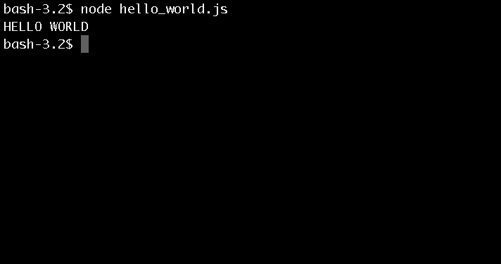

Using Node for the First Time
Now that you've made it this far, it's time to actually use the software. How about we code the original: "Hello World"
Node is unique because it will run JavaScript code from your local machine and not in a browser environment. So that is why you are loading your command window. We get to code and run our code straight from command line. Similar to using C/C++
1) Open your command line window and load your favorite shell. I prefer type
bash2) From this point we will engage node.js by typing:
node3) Now lets create a hellow_world.js file so we can run it later. Use your favorite text-editor and create
hello_world.js4) Now type the following into your file and then save and exit:
var greeting = "HELLO WORLD";
console.log(greeting);5) Now for the fun. Time to make Node.js work for you! Go ahead and load your command line window. Now type:
node hello_world.jsNow what do you see? Do you see something like this?

If not go ahead and repeat these steps until you do, because this is a crucial step to succeeding in any type of programing!
Time for more coding fun!
Lets go code How To Processes Arguments! Click Here